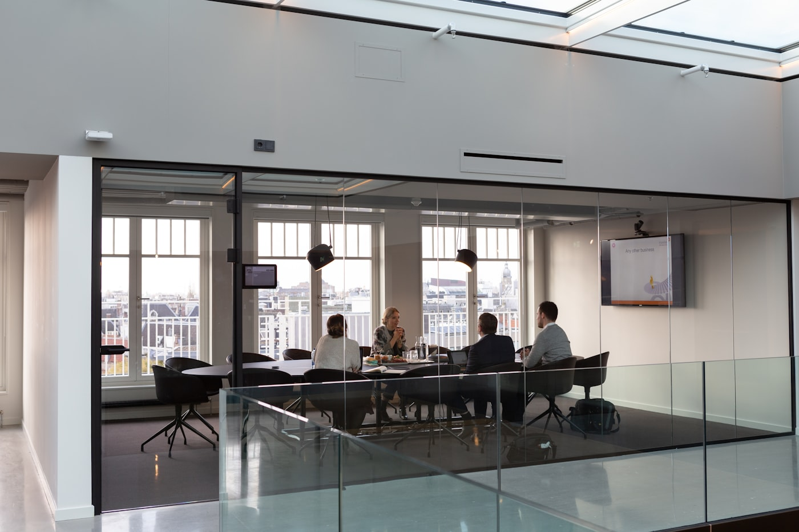

こんな課題にISSUES
01
案件の進捗が見えない
案件の進捗・受注確度が可視化されておらず“どんぶり”。打ち手がいつも後手に回る。
02
研修をやっても続かない
単発の研修で一時的に良くなっても、日々の運用に落ちず、気づけば元に戻ってしまう。
03
制度と営業がバラバラ
評価・報酬・採用要件が営業の型と連動しておらず、頑張る方向が揃わない。
提供内容WHAT WE DO
- モニタリング設計
- 案件進捗・活動量・受注確度を可視化。数字にもとづいて早く打ち手を打てる状態をつくります。
- 営業 × 人事制度への入り込み
- 評価・報酬・採用要件を営業の型と連動させ、「育つ仕組み」と「続く仕組み」を両立させます。
- 中期的な経営戦略の構築
- 営業を単発の施策で終わらせず、3カ年の成長計画に統合して経営と接続します。
- 定例レビューの運用
- 営業会議・案件レビューの設計と運用に伴走し、改善サイクルが自走する組織を目指します。

「まだ課題が整理できていない」という段階でも大丈夫です。
まずは60分の営業診断から、お気軽にご相談ください。